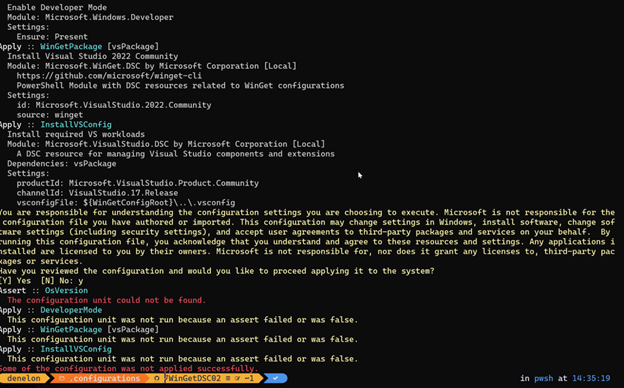
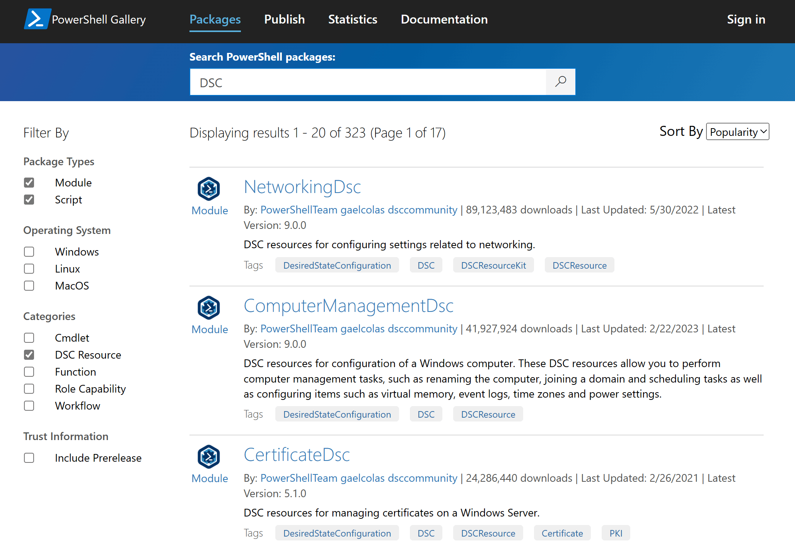

WinGet Configuration
Using a WinGet Configuration file, you can consolidate manual machine setup and project onboarding to a single command that is reliable and repeatable. To achieve this, WinGet utilizes:
- A YAML-formatted WinGet Configuration file that lists all of the software versions, packages, tools, dependencies, and settings required to set up the desired state of the development environment on your Windows machine.
- PowerShell Desired State Configuration (DSC) to automate the configuration of your Windows operating system.
- The Windows Package Manager
winget configurecommand to initiate the configuration process.
Benefits for machine setup and project onboarding
The benefits of using a WinGet Configuration file include:
- Unattended setup: Enter the
winget configurecommand and let Windows Package Manager and PowerShell DSC automate the installation and set up of all the requirements needed to get the desired development environment configured on your Windows machine. - Reliable and repeatable: Remove the worry over finding the right versions of software, packages, tools, frameworks, and configuring the correct machine settings for your development environment when onboarding to a new team or project because they are pre-defined in the WinGet Configuration file using a YAML format (with a JSON schema).
- Supports Open Source collaboration: WinGet Configuration files can be hosted in a GitHub repository where issues or contributions can be filed or can be kept private in a secure storage location (like OneDrive) and shared via private email or other secured channels.
Warning
WinGet Configuration files and any associated PowerShell DSC Resources should be checked to ensure that they are trustworthy before applying them.
Use a WinGet Configuration file to configure your machine
To set up your machine using a WinGet Configuration file, download the configuration file and double-click to invoke the configuration. Alternatively, use winget configure in the command line. To use the winget configure command, you must be running WinGet version v1.6.2631 or later.
WinGet Configuration FAQs
Find answers to some of the most frequently asked questions about WinGet Configuration.
How do WinGet Configuration files work?
WinGet Configuration files are written in YAML and define what is installed on the device to make up your development environment, as well as the configuration state for your machine and installed applications.
Rather than an imperative sequence of steps to be followed, a WinGet Configuration file is declarative, defining the desired machine configuration state result. By using Windows Package Manager and PowerShell DSC Resources, the declarative WinGet Configuration file can install, configure, and apply settings to your environment resulting in a ready-to-code state.
WinGet will parse the configuration file to ensure it's valid, then download all associated PowerShell modules (containing the DSC resources) required to achieve your desired state. Once these resources have been download and you've checked the trustworthiness of the WinGet Configuration file, agreeing that you've verified the safety of the file, WinGet will begin testing all required assertions and applying the desired state.
The sequence in which the WinGet Configuration file resources are ordered is inconsequential. Some install and configuration processes may even run in parallel. The assertions directly correspond with the dependsOn field defined in each Resource. If the resource includes a dependency on an assertion, the assertion will be checked first. If the assertion fails, the dependent resource will also fail. However, the configuration file will continue to run, accomplishing as many tasks as possible, even if some of the assertions or resource dependencies fail, bringing your machine as far along in the set up process as possible before completing. Once the configuration has completed, it is your responsibility to check for any failures.
For example, after running the WinGet Configuration file, you may see a result like:
Assert:: OsVersion
The configuration unit could not be found.
Apply :: DeveloperMode
This configuration unity was not run because an assert failed or was false.
Apply :: WinGetPackage [vsPackage]
This configuration unity was not run because an assert failed or was false.
In this example, the assertion checking for the required version of the Operating System failed, so the DeveloperMode and WinGetPackage resources that included a dependency on that assertion for the operating system version also failed. However, any other installation and configuration tasks listed in the configuration file would continue to move forward.
A benefit to the declarative (non-sequential) nature of WinGet configuration files is that the position of new resources being added to the file does not matter. This is especially helpful for long configuration files as you can just add additional resources to the bottom of the file. As long as you have properly defined the assertions and dependencies, you do not need to be concerned with the sequence, or which set up steps occur first, second, etc.

How do I use a WinGet Configuration file?
To run a WinGet Configuration file, you can simply double-click to run the file in file explorer. Alternatively, you can use the winget configure command.
How do I author a WinGet Configuration?
To create a WinGet Configuration file, follow the guidance in the How to author a WinGet Configuration file doc.
How can I assure that a WinGet Configuration file is trustworthy?
We recommend ALWAYS validating the integrity of a WinGet Configuration file before running it by reviewing it's contents and testing the configuration in an isolated environment. See How to check the trustworthiness of a WinGet Configuration file.
Where can I find sample WinGet Configuration files?
You can find sample WinGet Configuration files in the WinGet DSC repository: https://aka.ms/dsc.yaml.
Where can I find examples of PowerShell modules containing DSC resources?
The PowerShell Gallery hosts hundreds of PowerShell Modules containing Desired State Configuration (DSC) resources. You can filter search results by applying the “DSC Resource” filter under “Categories”.

Can I set up a policy to block the use of WinGet Configuration files in my organization?
Yes. Group Policy Objects EnableWindowsPackageManagerConfiguration and EnableWindowsPackageManagerConfigurationExplanation can be utilized for disabling WinGet Configuration feature in your organization.
Troubleshooting WinGet Configurations
The most common reason for a WinGet Configuration to fail is due to a PowerShell DSC resource requiring administrative access to apply the desired state. Not all DSC resources surface explicit reasons for failure.
More common troubleshooting issues will be added soon. In the meantime, check the related issues filed in the WinGet CLI repo on GitHub.